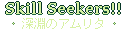
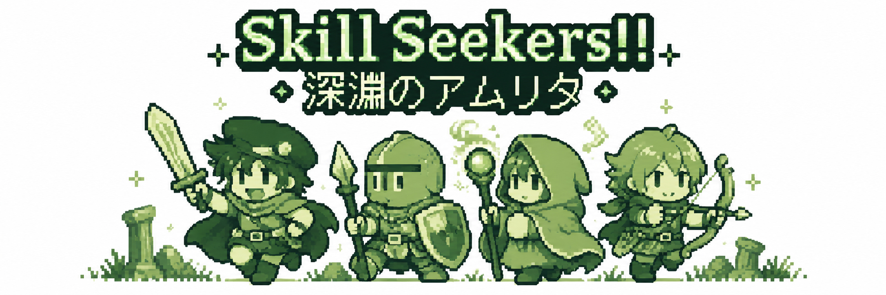

GUILD ギルド
PARTY STATUSで仲間の状態を確認。QUEST RECORD、SAVE、HELPもここから利用できます。
セーブについて：スマートフォン版を含むWeb版のデータは、端末・ブラウザごとに保存され、自動同期されません。サイトデータやブラウザのデータを削除すると、セーブが失われる場合があります。
RETRO RPG α TEST VERSION

技を使い切り、ひらめきで進む。
ブラウザでプレイするSTORY
ある王国に伝わる秘宝――「アムリタ」が、デーモン率いる魔物の一派に奪われた。
王国を聖なる光で守る秘宝を取り戻すため、王は各地の冒険者たちにデーモン討伐の命を下す。デーモンが逃げ込んだとされるダンジョンの周囲には、その呼びかけに応じた多くの冒険者が集まっていた。
数々の依頼を解決してきた歴戦の冒険者チーム、「SKILL SEEKERS」も、その一つ。
彼らはダンジョンの最深部に潜むデーモンを倒し、王国の秘宝アムリタを取り戻すことができるのか……。

GAME PLAY
インストール不要。PCでも、スマートフォンでも。
下のボタンから冒険を始められます。
スマートフォン：画面下の十字キーで移動・選択、Aで決定・調べる、Bで戻る・探索メニュー。
PC：矢印キーで移動・選択、ZキーがA、XキーがBです。
セーブは拠点のGUILDから。保存は端末・ブラウザごとです。保存について
ABOUT
4人のパーティでダンジョンを探索し、最奥のボスを目指すレトロRPGです。レベルや経験値はなく、戦闘後に能力が成長。ときには、今の能力では使いこなせない強力な技をひらめくこともあります。
思いがけないひらめきから、新しい育て方を見つけよう。スキル収集率100%、そしてMASTEREDのコンプリートも冒険の目標です。
CONTROLS
| ボタン | PCキー | 操作 |
|---|---|---|
| 十字キー | 矢印キー | 移動・選択 |
| A | Z | 決定・調べる |
| B | X | キャンセル |
| MAPでB | MAPでX | 探索メニューを開く |
BASE
冒険者が集う城下町が、あなたたちの拠点です。仲間や技を確認し、依頼と道具をそろえてダンジョンへ向かいましょう。
PARTY STATUSで仲間の状態を確認。QUEST RECORD、SAVE、HELPもここから利用できます。
セーブについて：スマートフォン版を含むWeb版のデータは、端末・ブラウザごとに保存され、自動同期されません。サイトデータやブラウザのデータを削除すると、セーブが失われる場合があります。
これまで発見したスキルを確認できます。またTRZを支払うと、一度習得したことのある一部の基本スキルを再習得できます。
城下町の人々から、探索・調査・討伐の3種類のクエストを受注。条件を達成して無事に帰還するとTRZを獲得できます。
TRZを支払って町のうわさを聞くことも。冒険のヒントが得られるかもしれません。
TRZで冒険に役立つアイテムを購入できます。
準備が整ったら、デーモン討伐の冒険へ。ダンジョンの奥へ進んでいきましょう。
MENU
探索中にBボタン（Xキー）で開きます。
BATTLE
ダンジョンではモンスターとのコマンド式戦闘が発生します。戦闘を重ねることで能力が成長し、戦闘後には新しいスキルをひらめくことがあります。
スキル枠は一人6個。7個目をひらめいたら、どのスキルを残すか選びましょう。
ADVENTURE TIPS
メンバーには力・速度・知力など、それぞれ得意分野があります。ただし、成長方向は完全固定ではありません。戦闘中に使うスキルによって、成長しやすい能力も変化します。
STATUS画面で成長傾向を確認しながら、自分だけのSKILL SEEKERSを育ててください。
使用回数が0になったSKILLは失われますが、最後まで使い切った記録はMASTEREDとして残ります。MASTEREDした攻撃SKILLを再び習得すると、威力は1.2倍。
目指せ、SKILL COLLECTION ＆ MASTERED 100%！
最初に受けられるのはLv1 QUEST。階層ボスを倒すと、より高いLvのQUESTが開放されます。探索・調査・討伐から依頼を選び、達成した記録はGUILDのQUEST RECORDで確認しましょう。
CHARACTERS
SKILL SEEKERS / LEADER
数々の依頼を解決してきた歴戦の戦士にして、パーティのリーダー。力を生かした物理攻撃を得意とする。
SKILL SEEKERS / SHINOBI
東洋の密偵「シノビ」の末裔。素早さを生かしたスキルを得意とする。
SKILL SEEKERS / MAGE
黒魔術を得意とする天才魔導士。高い知力を生かした魔法で活躍する。
SKILL SEEKERS / ELF
迷いの森出身のエルフ。華奢な見た目とは裏腹に、高いパワーを生かした戦いを得意とする。
DEMON
王国から秘宝アムリタを盗み出したとされる高位悪魔。非常に強力な魔力を持ち、王国に強い憎しみを抱いている。